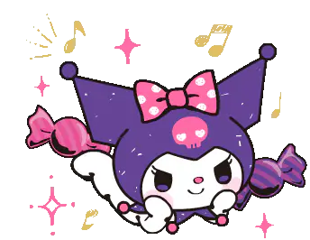
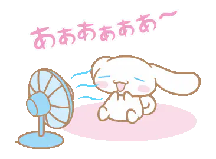
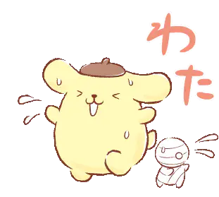
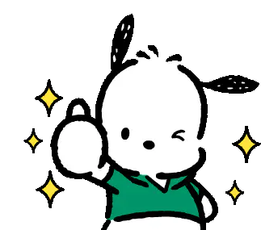
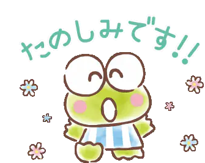
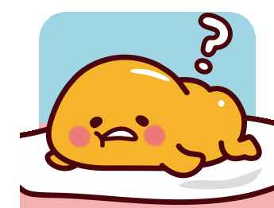

Conoce a los personajes mas populares de Sanrio
Hello Kitty

¡Es momento de conocer a la encantadora Hello Kitty! (aunque es probable que ya la conozcas)
Hello Kitty, inspirada en un gato japonés de cola corta, es uno de los mayores iconos de la esfera kawaii. Hello Kitty, que vive en los suburbios de Londres con el resto de su familia, es una niña brillante y de buen corazón. Mide cinco manzanas y pesa tres. Hello Kitty es muy amiga de su gemela, Mimmy. Es buena repostera, le gusta tocar el piano y colecciona cosas bonitas.
- Nombre real: Kitty White.
- Apodo:: Kitty-chan.
- Cumpleaños: 9 de Noviembre.
- Signo zodiacal: Escorpio.
- Pasatiempo: Hornear galletas.
- Dato curioso: Es amiga especial de los niños de UNICEF.
My Melody

My Melody es una de las conejitas más queridas de Sanrio, reconocible por su clásica capucha. Es amigable y femenina, ¡todo lo contrario a su amiga y rival Kuromi! Junto con Hello Kitty, My Melody es de los personajes más antiguos de Sanrio.
- Nombre real: My Melody.
- Apodo: My Melo.
- Cumpleaños: 18 de Enero.
- Signo zodiacal: Capricornio.
- Pasatiempo: Hornear pastel de almendras.
- Dato curioso: My Melody no tenía boca en la serie de televisión de Hello Kitty.
Kuromi
Kuromi es una chica rebelde y atrevida de Sanrio . Es exactamente lo opuesto a My Melody y le encantan todas las cosas negras. Puede parecer dura por fuera, pero tiene debilidad por las cosas lindas.
- Nombre real: Kuromi.
- Cumpleaños: 31 de Octubre.
- Signo zodiacal: Escorpio.
- Pasatiempo: Escribir en su diario.
- Color favorito:Negro.
- Dato curioso: En realidad, Kuromi es una prisionera fugitiva.
Cinamonroll
Cinnamoroll es un cachorrito blanco y esponjoso con una cola que parece un rollo de canela. Siempre anda por Café Cinnamon, compartiendo con sus amigos y viviendo aventuras que llenan de alegría a todos los que se cruzan en su camino.
- Nombre real: Cinamonroll.
- Cumpleaños: 6 de Marzo.
- Signo zodiacal: Tauro.
- Pasatiempo: Bilar como sus ídolos pop favoritos.
- Dato curioso: Cinnamoroll fue diseñado inicialmente como un conejo regordete.
Pompompurin
algo.
- Nombre real: Pompompurin.
- Cumpleaños: 16 de Abril
- Signo zodiacal: Aries.
- Pasatiempo: Ver videos de repostería
- Dato curioso: Pompompurin no siempre tuvo su característico trasero de asterisco.
Pochacco
Pochacco es un perrito encantador y deportivo que se ganó el corazón de todos los fans de Sanrio. Este cachorrito es fanático de los deportes y siempre está listo para la aventura con su mejor amigo Choppy y su mascota, el patito Peele.
- Nombre real: Pochacco.
- Cumpleaños: 29 de Febrero.
- Signo zodiacal: Picis
- Pasatiempo: Hacer deporte y atletismo.
- Dato curioso: Originalmente, Pochacco era un perrito sin ropa.
Bad Badtz-Maru

Badtz-Maru es un pingüino negro que se hace el chico malo, pero en realidad es un tiernito. Sueña con conquistar el mundo, aunque en realidad es más blando de lo que aparenta. Nacido en una familia de gánsteres, intenta mantener la pose, pero siempre tiene un lugar para sus amigos como Hangyodon, Kuromi, Pochacco y todos los demás.
- Nombre real: Badtz-Maru.
- Apodo:
- Cumpleaños: 1 de Abril.
- Signo zodiacal: Aries.
- Pasatiempo: Coleccionar fotos de villanos de películas.
- Dato curioso: Sueña con convertirse en presidente.
Keroppi
algo.
- Nombre real: Kero-Kero-Keropi
- Cumpleaños: 10 de Julio.
- Signo zodiacal: Cancer.
- Pasatiempo: Cantar, pescar y jugar al béisbol.
- Dato curioso:Keroppi solo nada estilo libre porque no es bueno nadando estilo rana.
Gudetama
¡Gudetama es el huevo perezoso que todos aman! Con su actitud de "la vida es difícil", nos recuerda que está bien tomarse un descanso. Aunque es un poco vago, ha trabajado un montón y aparece en cómics, juegos, y series. ¡Gudetama es todo un fenómeno, y sin mover un dedo!.
- Nombre real: Gudetama.
- Cumpleaños:
- Signo zodiacal:
- Pasatiempo:
- Dato curioso:
Little Twin Stars


algo.
- Nombre real:
- Apodo:
- Cumpleaños:
- Signo zodiacal:
- Pasatiempo:
- Dato curioso:
Ve al instagram de Irene haciendo click aqui.
Aqui encontraras mas informacion
Contactanos!